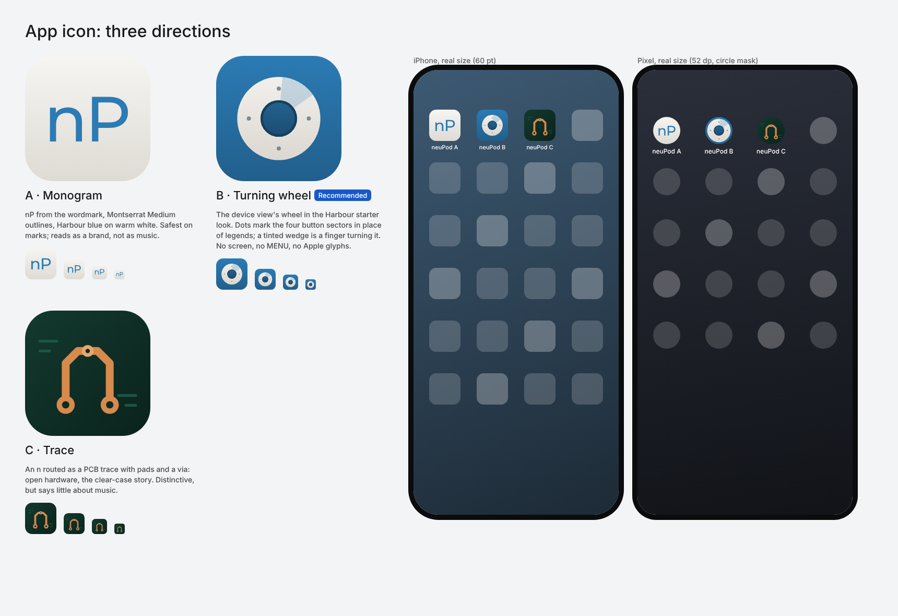
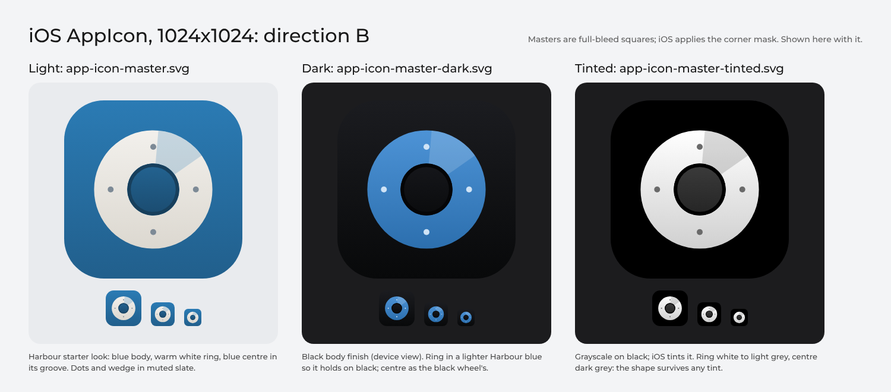
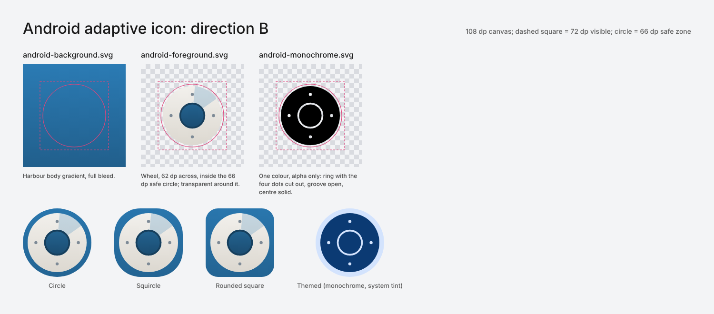
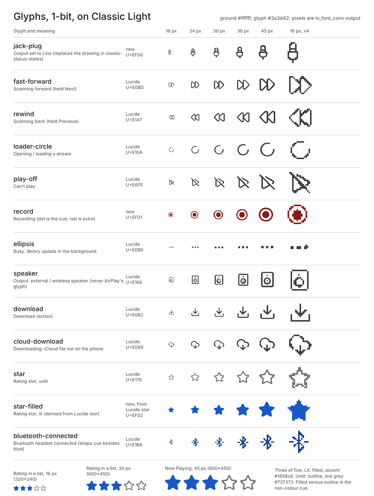
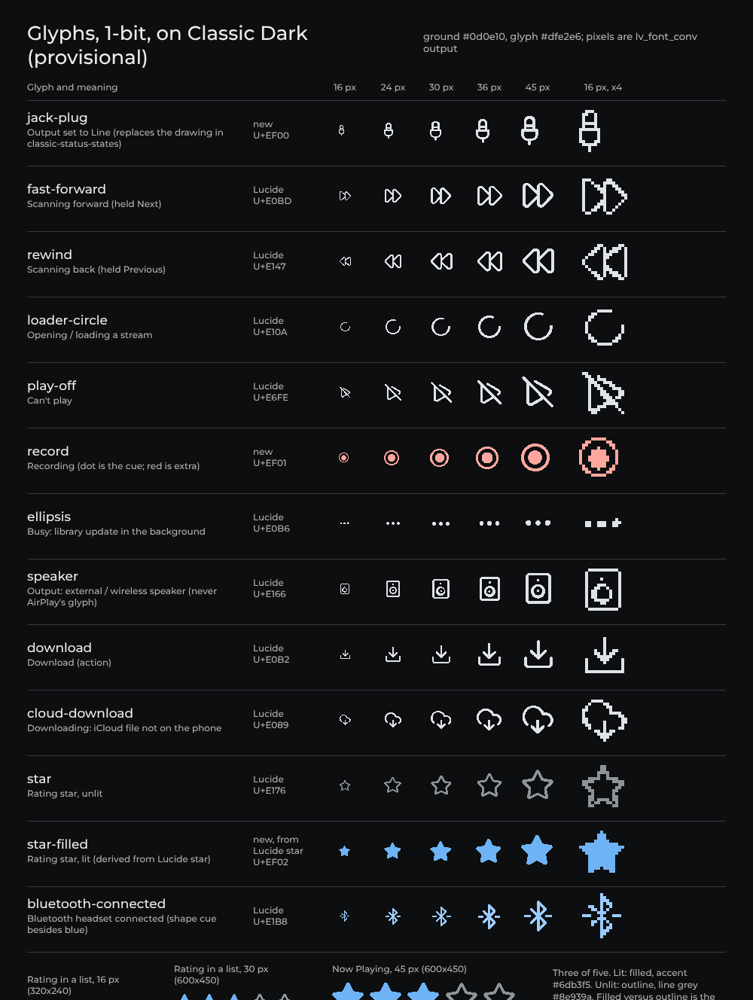
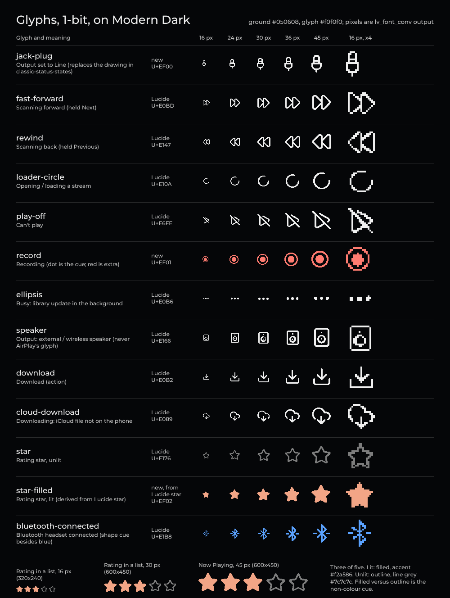
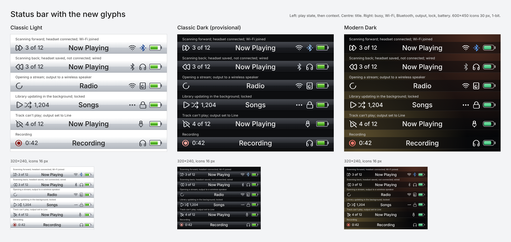

Icon set: app icon and the missing UI glyphs, 26 November 2026¶
Backlog AP-2 (the app icon) and the "Not yet drawn" list in the UI styles, plus the glyphs the phone app needs for ratings, downloads and external speakers. Works inside the UI styles, the device view, Custom mode, ADR-0022 and the constitution (I: one player UI; VI: no Apple marks or artwork).
This folder holds:
- this README: the decisions, the recommended app icon, open questions and the glyph table;
- IMPLEMENTATION-BRIEF.md: file names, sizes, code points and the build steps for engineers;
- PROGRESS.md: the checklist, ticked off as it merges;
svg/: one SVG per glyph on Lucide's 24 px grid, and the app icon masters;mockups/: the sheets as standalone HTML and PNG;render.py: draws the sheets. It builds the new glyphs into a small font and rasterises every glyph withlv_font_conv1.5.3 at 1 bpp, the tool and flagstools/gen_ui_fonts.shalready uses, so the 1-bit pixels on the sheets are the firmware's own bitmaps, not an approximation.
The app icon (AP-2)¶

| Direction | What it is | For | Against |
|---|---|---|---|
| A · Monogram | nP from the wordmark, Montserrat Medium outlines, Harbour blue on warm white |
No likeness risk at all; reads as a name | Says nothing about music; two letters get thin at 20 px |
| B · Turning wheel (recommended) | The device view's wheel in the Harbour starter look: blue body, warm white ring, blue centre in its groove; four dots mark the button sectors; a 50° wedge is the device view's touch tint, a finger mid-turn | Says "this is the player you hold", ties the icon to the device view and Custom mode, survives monochrome and tint as a pure shape | Any wheel invites the Apple comparison: see below |
| C · Trace | An n routed as a copper PCB trace with pads and a via, on solder-mask green |
Open hardware, the clear-case story; nobody else's | Reads as electronics, not music |
Decided: B (owner, 26 November 2026). It is the one an owner recognises on a crowded home screen, and it is already neuPod's own drawing. How it differs from Apple's click wheel and product artwork (constitution VI):
- no
MENU, no transport legends: four plain dots mark the sectors of the device view's hit-zone geometry instead; - the device view's proportions (centre 0.36 D, groove 0.44 R), not the 5G/6G's;
- no screen, no body outline, no device silhouette: just the wheel, so it is not a picture of a product;
- coloured in neuPod's Harbour look; the touch wedge is neuPod's own state from the device view;
- no Apple glyph, apple,
iPodname or SF Symbol anywhere.
A and C are kept as masters for the record only.
iOS and Android¶


- iOS (
svg/app-icon-master.svg,-dark,-tinted): full-bleed 1024 squares, iOS applies the mask. Dark uses the black body finish with the ring in a lighter Harbour blue (#4d93d6to#2c6fae) so it holds on black. Tinted is grayscale on black: white ring, dark grey centre. - Android (
svg/android-foreground.svg,-background,-monochrome): 108 dp canvas; the wheel is 62 dp across, inside the 66 dp safe circle, so circle, squircle and rounded-square masks all keep it whole. Monochrome is one colour with the four dots cut out and the groove open, so the system tint keeps the wheel's structure. - Directions A and C exist as single masters only (
svg/app-icon-direction-a-monogram.svg,-c-trace.svg), enough to choose from. Variants are drawn for the chosen direction.
The glyphs¶



Glyph (svg/) |
Base | Code point | Meaning | Where it shows |
|---|---|---|---|---|
jack-plug |
new (redrawn on the Lucide grid from classic-status-states.html) |
U+EF00 | Output set to Line | Status bar, output slot |
fast-forward |
Lucide fast-forward |
U+E0BD | Scanning forward (Next held) | Status bar, play-state slot |
rewind |
Lucide rewind |
U+E147 | Scanning back (Previous held) | Status bar, play-state slot |
loader-circle |
Lucide loader-circle |
U+E10A | Opening / loading (network streaming) | Status bar, play-state slot |
play-off |
Lucide play-off |
U+E6FE | Can't play | Status bar, play-state slot; greyed row with its reason |
record |
new | U+EF01 | Recording | Status bar, play-state slot |
ellipsis |
Lucide ellipsis |
U+E0B6 | Busy: library update in the background | Status bar, right zone, first |
speaker |
Lucide speaker |
U+E166 | Output is an external speaker (Wi-Fi, AirPlay or other) | Status bar, output slot; output pickers |
download |
Lucide download |
U+E0B2 | Download (an action) | App rows and menus |
cloud-download |
Lucide cloud-download |
U+E089 | Downloading: an iCloud file not yet on the phone; the reason is on the row | App rows |
star |
Lucide star |
U+E176 | Rating, unlit | Lists, Now Playing page 2 |
star-filled |
new, derived from Lucide star |
U+EF02 | Rating, lit | Lists, Now Playing page 2 |
bluetooth-connected |
Lucide bluetooth-connected |
U+E1B8 | Headset connected or in use | Status bar, Bluetooth slot |
Lucide code points are the Lucide font's own (1.72.0, as pinned in tools/gen_ui_fonts.sh). The three new glyphs take
U+EF00 to U+EF02, a private-use block above Lucide's highest (U+E853) and below the Font Awesome symbols (U+F001 up).
Decisions¶
- Lucide wherever Lucide has it. Nine of the thirteen are unmodified Lucide glyphs: they come through the existing pipeline with only new code points. Only the plug, the record mark and the lit star are drawn.
- The jack plug is redrawn on the grid, 2 px stroke, round caps and joins: a 6-unit tip with one insulating ring,
a 10-unit body with rounded bottom, a 3-unit cable. It keeps the drawing's meaning and its upright stance, and stays
distinct from Lucide
plug(a mains plug with two prongs). At 16 px the tip closes to a solid pin and still reads. - Fills only for "on". The rule allows fills only where the UI styles already use them. Two glyphs mean lit, and the fill is their non-colour cue: the lit star (filled versus outline) and the record mark (a solid dot in a ring; the dot is the universal sign, red is extra). Nothing else is filled.
- Ratings in the device's way: lit in the style's accent (
#1858c8Classic Light;#6db3f5Classic Dark; the art's light tint,#f2a586in the mock-up, on Modern), unlit in line grey. Filled versus outline carries the meaning without colour. List size is the icon font's small size (16 / 24 / 30 px by profile), Now Playing the large (24 / 36 / 45). This replaces the Font Awesome star (UI_SYMBOL_STAR) so ratings match the rest of the icons. - Bluetooth gets a shape cue (Gate 2, owner decision 13): connected or in use is
bluetooth-connected(the glyph with a tick each side) and blue; saved but not connected is plainbluetoothin the dim colour. The app already shipsbluetooth-connected.svg; this brings the firmware into line. - Busy dots sit first in the right zone, before Wi-Fi: a background job is device state, like the radios, and the
left zone belongs to playback. The firmware keeps drawing them as three shapes that light in turn (ui_icons.h says
so); the
ellipsisglyph is for the app and for static places. Lucide's dots land unevenly at 16 px (see the x4 cell), which is why the drawn shapes stay. - External speaker is Lucide
speaker, never AirPlay's glyph (owner decision 13), for every wireless or network output that is not a Bluetooth headset. - Opening uses
loader-circleas a static glyph. It may turn in 45° steps on hosted builds; on the microcontroller it stays still. - Contrast. Every glyph colour meets 4.5:1 against the worst point under it (for the status bar, its darkest or lightest gradient stop; for Modern, the bar over a bright art backdrop). This moved three Classic Light values from the 21 November table, as Gate 2 asked:
| Style | Role | Colour | Worst ground | Ratio |
|---|---|---|---|---|
| Classic Light | glyph | #3a3d42 |
bar #b6bbc2 |
5.65 |
| Classic Light | dim (was #9a9ea5) |
#474b52 |
bar #b6bbc2 |
4.54 |
| Classic Light | Bluetooth active (was #1858c8) |
#123f8f |
bar #b6bbc2 |
5.10 |
| Classic Light | recording | #8a1a15 |
bar #b6bbc2 |
4.86 |
| Classic Light | star lit / unlit | #1858c8 / #737373 |
#ffffff |
6.42 / 4.74 |
| Classic Dark* | glyph / dim | #dfe2e6 / #b5bac1 |
bar #45484e |
7.06 / 4.70 |
| Classic Dark* | Bluetooth active / recording | #9ccbff / #ffa79e |
bar #45484e |
5.41 / 4.92 |
| Classic Dark* | star lit / unlit | #6db3f5 / #8e939a |
#0d0e10 |
8.66 / 6.24 |
| Modern Dark | glyph / dim (was #7a7a7a) |
#f0f0f0 / #9a9a9a |
bar over a gold wash #2f2a1f |
12.5 / 5.07 |
| Modern Dark | Bluetooth active / recording | #5aa2ff / #ff7b70 |
#2f2a1f |
5.47 / 5.65 |
| Modern Dark | star lit / unlit | #f2a586 / #7c7c7c |
#050608 |
10.1 / 4.86 |
* Classic Dark is still not designed (UI styles open question 1). Its colours here are provisional, chosen only so the glyphs could be checked on a dark Classic ground. They are not a design for Classic Dark.
With the dim colour this dark, saved and connected Bluetooth are told apart by shape, not by shade, which is why decision 5 matters.
The status bar¶

Six states, in all three styles, at 600x450 (icons 30 px) and 320x240 (16 px), every glyph 1-bit from the real font: scanning forward with a headset connected; scanning back with a saved headset and wired headphones; opening a stream to a wireless speaker; a library update while locked; a track that can't play with Line out; recording. The right zone order is: busy, Wi-Fi, Bluetooth, output (headphones, jack plug or speaker), lock, battery.
Open questions¶
Questions 2 to 5 were settled on the recommendations below (owner, 27 November 2026).
| # | Question | Recommendation |
|---|---|---|
| 1 | ~~App icon direction~~ | Decided 26 Nov 2026: B, Turning wheel |
| 2 | ~~Transport glyph fills.~~ Decided 27 Nov 2026: outline everywhere. The 21 November mock-ups draw play and pause filled; the firmware draws Lucide's outlines. The new scanning, can't-play and opening glyphs follow the outlines | Outline everywhere, the firmware as reference (ADR-0022); redraw the mock-ups' play and pause when they are next touched |
| 3 | ~~Busy dots' place~~ Decided 27 Nov 2026: right zone.: first in the right zone (drawn) or after the play glyph on the left | Right zone, decision 6 |
| 4 | ~~Classic Light dim and Bluetooth colours~~ Decided 27 Nov 2026: adopted. change for 4.5:1 (table above) | Adopt, together with bluetooth-connected as the shape cue |
| 5 | ~~Classic Dark~~ Decided 27 Nov 2026: test ground only. was needed as a ground to test on and is still undesigned | Treat the provisional colours as a test ground only; check these glyphs again when Classic Dark is designed |
Licences¶
Everything drawn here is the project's own: the sheets and this text CC BY 4.0, the SVGs and the app icon alongside the
firmware under MPL-2.0. Nine glyphs are unmodified Lucide icons and star-filled is derived from Lucide star: all ten
are ISC (Lucide 1.72.0). Correction (firmware PR #173, checked against lucide-static 1.72.0's LICENSE): download and ellipsis (Feather's more-horizontal) derive from Feather (MIT), as do headphones and monitor, which the firmware also draws. Add them to the Lucide row of LICENSE.md (now
"the 15 icons of the design system and the 5 of the boot splash" plus these 10) and to the Licences screen
(app/ui/ui_licence_data.c), which tests/test_licences.c checks. jack-plug, record and the app icon are entirely
neuPod's; direction A's letters are Montserrat Medium outlines (SIL OFL 1.1, already in the table).